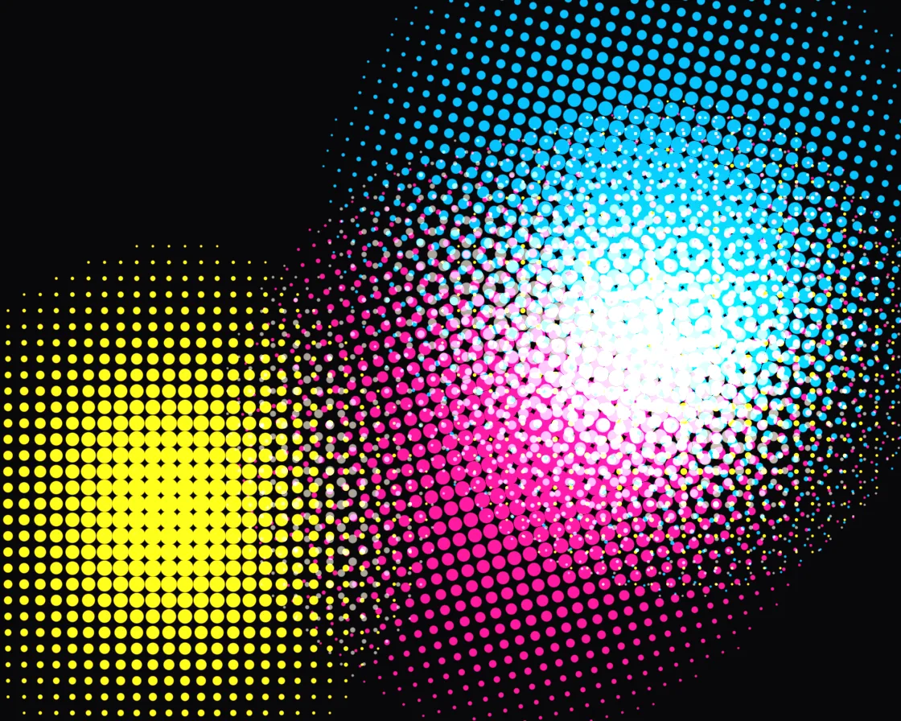

CMYK halftone
CMYK halftone is a WebGL effect: rotated dot screens (C15° M75° Y0° K45°) printed in light. One plain JavaScript file with no dependencies; add it with npx motion-library add cmyk-halftone.

Open it live, tune it and copy the code
What is CMYK halftone?
Drifting colour orbs print as rotated halftone dot screens forming rosettes; the cursor makes dots bloom.
How does CMYK halftone work?
Each separation is a grid at its classic angle; every pixel finds its cell, samples at the centre and draws one dot sized to the ink coverage.
How do I add CMYK halftone to my website?
- In your project folder, run
npx motion-library add cmyk-halftone. It writesanimations/cmyk-halftone.js. Needs Node 18 or newer. - Import it and call it with a container element that has a size:
import fx from './animations/cmyk-halftone.js'; const stop = fx(document.querySelector('#hero')); - Call
stop()to clean up, for example when a component unmounts.
Every setting below is also a flag, so you can install it already tuned: npx motion-library add cmyk-halftone --dot 20.
What settings can I tweak?
| Setting | Flag | Default | Range | Step |
|---|---|---|---|---|
| Dot pitch (px) | --dot | 10 | 4 to 20 | 0.5 |
| Speed | --speed | 1 | 0 to 3 | 0.05 |
| Pointer bloom | --bloom | 1 | 0 to 2 | 0.05 |
Specifications
- Renderer
- WebGL
- Category
- Shaders & glitch
- Dependencies
- None
- File size
- 7.6 KB, unminified
- Interactive
- Yes: it responds to the pointer
- Reduced motion
- Respects prefers-reduced-motion
- Licence
- MIT-0: use it anywhere, no credit needed
Source code
// CMYK halftone, printed in light. A moving abstract image (three drifting orbs of cyan, magenta and yellow light) is split
// into four separations, and each one becomes its own screen of dots turned to the classic press angles: cyan 15°,
// magenta 75°, yellow 0° and the key plate 45°. Every pixel finds its cell in each rotated screen, samples the image
// at that cell's centre and draws one dot whose area matches the ink needed there. The four screens interleave into
// the familiar rosettes. On a dark sheet ink can't subtract, so the inks emit instead: cyan, magenta and yellow light
// add up (cyan + yellow = green, all three ≈ white) and the key plate carries the shared brightness as warm white.
// The pointer (or an idle ghost) makes the dots under it bloom: they swell, merge and brighten.
const PARAMS = { dot: 10, speed: 1, bloom: 1 };
export default function (stage) {
const canvas = document.createElement('canvas');
canvas.style.cssText = 'position:absolute;inset:0;width:100%;height:100%;display:block';
stage.append(canvas);
const gl = canvas.getContext('webgl2', { antialias: false });
if (!gl) { stage.textContent = 'This needs WebGL2.'; return () => canvas.remove(); }
const reduce = matchMedia('(prefers-reduced-motion: reduce)').matches;
const vs = `#version 300 es
in vec2 p; void main() { gl_Position = vec4(p, 0, 1); }`;
const fs = `#version 300 es
precision highp float; out vec4 o;
uniform vec2 R, M; uniform float T, D, MA, u_dot, u_speed, u_bloom;
float hash(vec2 p) { return fract(sin(dot(p, vec2(127.1, 311.7))) * 43758.5453); }
vec2 hash2(vec2 p) { return fract(sin(vec2(dot(p, vec2(127.1, 311.7)), dot(p, vec2(269.5, 183.3)))) * 43758.5453); }
float noise(vec2 p) { vec2 i = floor(p), f = fract(p); f = f * f * (3. - 2. * f);
return mix(mix(hash(i), hash(i + vec2(1, 0)), f.x), mix(hash(i + vec2(0, 1)), hash(i + 1.), f.x), f.y); }
float fbm(vec2 p) { float s = 0., a = .5; mat2 m = mat2(1.6, 1.2, -1.2, 1.6); for (int i = 0; i < 5; i++) { s += a * noise(p); p = m * p; a *= .5; } return s; }
vec3 image(vec2 q) { // the "photo": three soft orbs of ink-coloured light
vec3 col = vec3(0);
vec3 ink[3] = vec3[3](vec3(0, 1, 1), vec3(1, 0, 1), vec3(1, 1, 0));
for (int i = 0; i < 3; i++) {
float fi = float(i);
vec2 c = vec2(sin(T * (.21 + .05 * fi) + fi * 2.1) * .34 * R.x / R.y, cos(T * (.17 + .04 * fi) + fi * 1.4) * .22);
float r = length(q - c) / (.42 + .06 * sin(T * .5 + fi));
col += ink[i] * smoothstep(1., .0, r) * (1. - .3 * r);
}
col *= .8 + .4 * (fbm(q * 3. + T * .1) - .5); // a little texture inside the light
return col;
}
float screen(vec2 px, float ang, int ch, float cell, out float bl) {
float ca = cos(ang), sa = sin(ang);
mat2 Rm = mat2(ca, sa, -sa, ca);
vec2 r = Rm * px / cell, cc = floor(r) + .5;
vec2 cpx = transpose(Rm) * cc * cell; // cell centre, back in pixels
vec2 q = (cpx - .5 * R / D) / (R.y / D); // … and in stage units
vec3 c = image(q);
// additive separation: C = G + B − R, M = R + B − G, Y = R + G − B (halved), K = the shared part
float k = min(c.r, min(c.g, c.b));
vec3 e = c - k;
vec4 sep = vec4(clamp(vec3(e.g + e.b - e.r, e.r + e.b - e.g, e.r + e.g - e.b) * .5, 0., 1.), k);
float cov = sep[ch];
vec2 dm = q - M; bl = exp(-dot(dm, dm) * 26.) * u_bloom;
cov = clamp(cov * (1. + 1.4 * bl) + .22 * bl, 0., 1.); // bloom: swell, and wake up empty paper too
float rad = sqrt(cov) * .62; // dot area tracks coverage; touches neighbours at ~80%
float d = length(r - cc) - rad;
float aa = 1. / (cell * D);
return smoothstep(aa, -aa, d) * step(.01, cov);
}
void main() {
vec2 px = gl_FragCoord.xy / D; // css pixels
float cell = u_dot, b0, b1, b2, b3;
float C = screen(px, radians(15.), 0, cell, b0);
float Mg = screen(px, radians(75.), 1, cell, b1);
float Y = screen(px, 0., 2, cell, b2);
float K = screen(px, radians(45.), 3, cell, b3);
vec3 paper = vec3(.028, .026, .036) * (.92 + .08 * noise(px * .7));
vec3 col = paper;
col += vec3(0., .7, 1.) * C;
col += vec3(1., .06, .55) * Mg;
col += vec3(1., .9, .05) * Y * 1.1;
col += vec3(1., .95, .86) * K * .6;
col *= 1. + .35 * max(max(b0, b1), max(b2, b3));
col = min(col * 1.2 / (1. + .2 * col), vec3(1)); // where screens overlap, light piles up softly
o = vec4(col, 1);
}`;
const sh = (t, s) => { const x = gl.createShader(t); gl.shaderSource(x, s); gl.compileShader(x); if (!gl.getShaderParameter(x, gl.COMPILE_STATUS)) throw new Error(gl.getShaderInfoLog(x)); return x; };
const prog = gl.createProgram(); gl.attachShader(prog, sh(gl.VERTEX_SHADER, vs)); gl.attachShader(prog, sh(gl.FRAGMENT_SHADER, fs)); gl.bindAttribLocation(prog, 0, 'p'); gl.linkProgram(prog);
if (!gl.getProgramParameter(prog, gl.LINK_STATUS)) throw new Error(gl.getProgramInfoLog(prog));
gl.useProgram(prog);
gl.bindBuffer(gl.ARRAY_BUFFER, gl.createBuffer()); gl.bufferData(gl.ARRAY_BUFFER, new Float32Array([-1, -1, 3, -1, -1, 3]), gl.STATIC_DRAW);
gl.enableVertexAttribArray(0); gl.vertexAttribPointer(0, 2, gl.FLOAT, false, 0, 0);
const U = {}; ['R', 'M', 'T', 'D', 'MA', 'u_dot', 'u_speed', 'u_bloom'].forEach(n => U[n] = gl.getUniformLocation(prog, n));
let dpr = 1;
const resize = () => { dpr = Math.min(devicePixelRatio, 2); canvas.width = (stage.clientWidth || 1) * dpr | 0; canvas.height = (stage.clientHeight || 1) * dpr | 0; gl.viewport(0, 0, canvas.width, canvas.height); };
const ro = new ResizeObserver(resize); ro.observe(stage); resize();
// the pointer, in shader space (units of stage height, origin at the centre, y up); an idle "ghost" takes over
// when nobody is pointing, so the card is never static
let tx = 0, ty = 0, mx = 0, my = 0, ma = 0, lastMove = -1e9, gt = 0;
const toLocal = e => { const b = canvas.getBoundingClientRect(); return [(e.clientX - b.left - b.width / 2) / b.height, (b.height / 2 - (e.clientY - b.top)) / b.height]; };
const onMove = e => { [tx, ty] = toLocal(e); lastMove = performance.now(); };
const onLeave = () => { lastMove = -1e9; };
const onDown = e => { onMove(e); };
canvas.addEventListener('pointermove', onMove); canvas.addEventListener('pointerdown', onDown); canvas.addEventListener('pointerleave', onLeave);
let raf, t = 0, last = performance.now();
function frame(now) {
const dt = Math.min(0.05, (now - last) / 1000); last = now;
t += dt * PARAMS.speed * (reduce ? 0.05 : 1);
const live = now - lastMove < 2500, asp = canvas.width / canvas.height;
if (!reduce) gt += dt;
if (!live) { tx = asp * 0.3 * Math.sin(gt * 0.41) + 0.06 * Math.sin(gt * 1.3); ty = 0.24 * Math.sin(gt * 0.67 + 1.2); }
const k = 1 - Math.exp(-dt * (live ? 14 : 3));
mx += (tx - mx) * k; my += (ty - my) * k; ma += ((live ? 1 : 0) - ma) * (1 - Math.exp(-dt * 4));
gl.uniform2f(U.R, canvas.width, canvas.height); gl.uniform1f(U.T, t); gl.uniform1f(U.D, dpr);
gl.uniform2f(U.M, mx, my); gl.uniform1f(U.MA, ma);
gl.uniform1f(U.u_dot, PARAMS.dot);
gl.uniform1f(U.u_speed, PARAMS.speed);
gl.uniform1f(U.u_bloom, PARAMS.bloom);
gl.drawArrays(gl.TRIANGLES, 0, 3);
raf = requestAnimationFrame(frame);
}
raf = requestAnimationFrame(frame);
return () => { cancelAnimationFrame(raf); ro.disconnect(); canvas.removeEventListener('pointermove', onMove); canvas.removeEventListener('pointerdown', onDown); canvas.removeEventListener('pointerleave', onLeave); gl.getExtension('WEBGL_lose_context')?.loseContext(); canvas.remove(); };
}